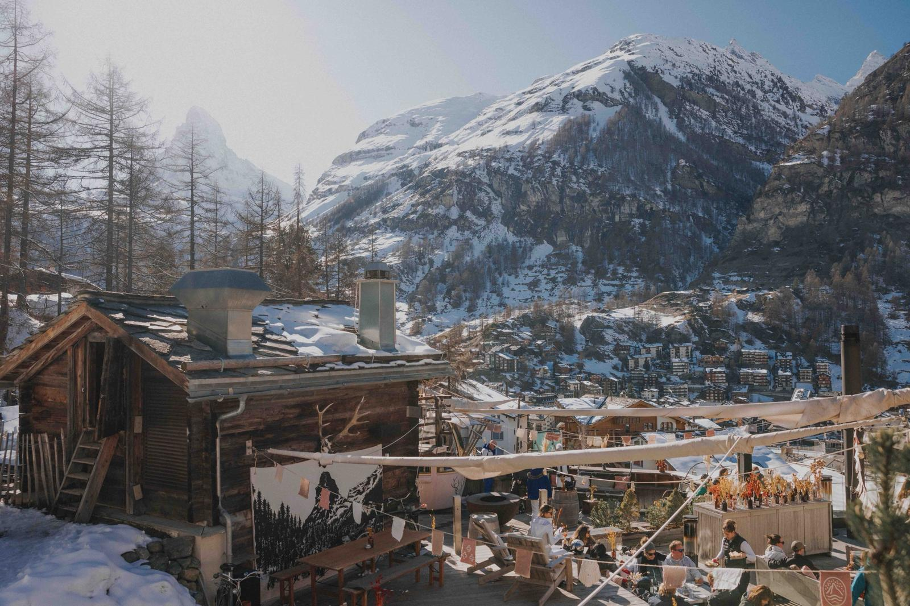
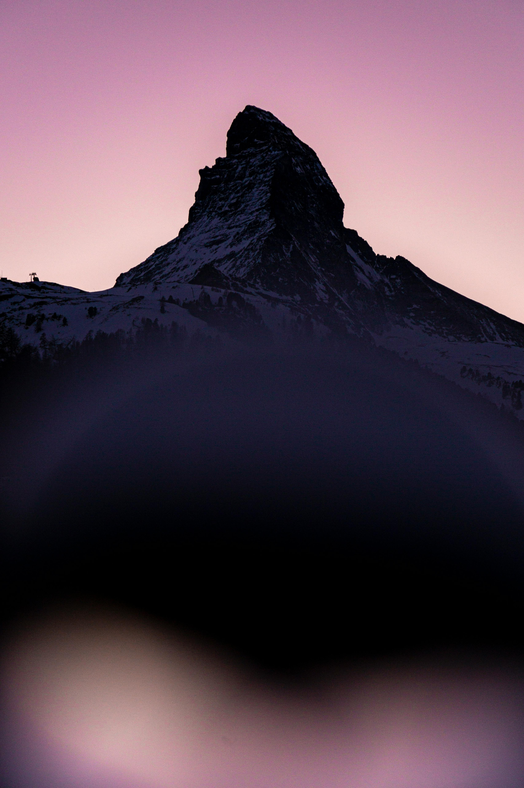

Switzerland's most iconic mountain destination · Home of the Matterhorn
Zermatt is a world-famous mountain resort located in the canton of Valais in southern Switzerland, at an altitude of 1,620 metres. It is one of the highest year-round inhabited villages in the Alps and has been a top international travel destination since the 19th century.
The village is completely car-free – electric vehicles and horse-drawn carriages are the only modes of transport on its streets. This gives Zermatt a unique, tranquil atmosphere that sets it apart from other ski resorts.


The Matterhorn (4,478 m) is one of the most photographed mountains in the world and the symbol of both Zermatt and Switzerland. Its distinctive pyramid shape dominates the skyline and attracts mountaineers, photographers and travellers from around the globe.
The first ascent was made in 1865 by Edward Whymper, and today the mountain continues to challenge experienced climbers while inspiring visitors of all kinds.
Zermatt has a rich alpine heritage, with traditional Valais architecture, historic wooden chalets and a strong local culture that dates back centuries.
Built in 1898, this historic rack railway climbs to 3,089m – one of Switzerland's most iconic journeys.
Historic timber chalets and traditional Valais farmhouses line the car-free streets alongside luxury boutiques.
Car-free since 1930, Zermatt is a model for responsible alpine tourism powered by renewable energy.